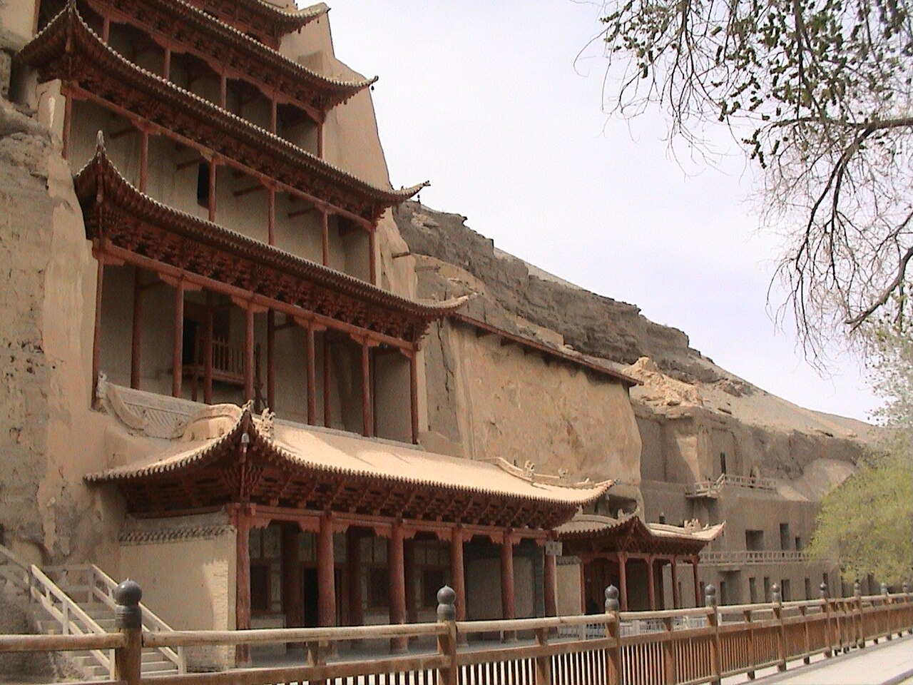

丝绸之路自驾以河西走廊为核心，串联西安、兰州、武威、张掖、酒泉、嘉峪关、敦煌等历史名城。大漠、绿洲、长城与佛窟讲述东西方文明交汇的故事，人文密度远超普通风景自驾。
经典走向：西安—天水—兰州—武威—张掖—酒泉—嘉峪关—敦煌—（可选）哈密。也可反向而行。莫高窟、麦积山、马蹄寺、七彩丹霞、嘉峪关关城是必停节点。
河西走廊相对平坦，驾驶难度低于青藏或新疆帕米尔，但夏季地表温度高、风沙大。5–10 月适宜出行，冬季部分山区可能降雪。建议每座名城至少留半日至一日，避免「车游不城游」。
Itinerary
分日行程
西安 → 天水
参观麦积山石窟（需预约），凌空栈道与泥塑艺术令人震撼。天水伏羲庙可选。陇东南是进入河西的门户。
天水 → 兰州
抵达兰州，黄河铁桥、白塔山、甘肃省博（马踏飞燕）是经典组合。牛肉面早餐不可错过。
兰州 → 武威 → 张掖
经武威可访雷台汉墓（铜奔马出土地）。傍晚抵张掖，若时间允许可预览七彩丹霞 sunset。
张掖 → 酒泉 → 嘉峪关
上午深度游七彩丹霞或马蹄寺。下午至嘉峪关，登关城感受「天下第一雄关」的戈壁背景。
嘉峪关 → 敦煌
戈壁长途，可选停榆林窟或锁阳城遗址。傍晚抵敦煌，沙州夜市可尝驴肉黄面。
敦煌一日游
莫高窟与鸣沙山月牙泉组合一日游。两景区均需预约，建议莫高窟上午、鸣沙山下午至日落。
敦煌 → 玉门关 → 阳关（可选）
西线一日游，感受「西出阳关无故人」的苍茫。戈壁无遮阴，备足水与防晒。
敦煌 → 返程或延伸新疆
可飞返或沿 G30 继续西进哈密、吐鲁番。河西走廊段至此完成经典人文自驾。
Photo Essay
沿途影像



Highlights
核心景点
莫高窟
敦煌艺术宝库，壁画记录从北朝至元的佛教与社会生活。参观需跟随讲解，保护文物人人有责。
嘉峪关关城
明长城西端终点，关城与祁连山、黑山构成「河西锁钥」地理格局。登城可想象古代商旅通关场景。
七彩丹霞
张掖国家地质公园，彩色丘陵在日出日落时最为绚丽。景区分多个观景台，观光车串联。
麦积山石窟
天水东南悬崖上的泥塑石窟，有「东方雕塑馆」之称。栈道凌空，恐高者需谨慎。
鸣沙山月牙泉
沙山与清泉共存的奇观，月牙泉千年不涸。骑骆驼、滑沙、等星空都是经典体验。
Route
途经站点
东起点（可选）
丝绸之路东方起点，兵马俑可另排 1 天。
黄河枢纽
甘肃省博、铁桥为必停。
七彩丹霞
傍晚光线最佳，可二次入园。
天下第一雄关
关城与长城第一墩可联票。
河西西端
莫高窟、鸣沙山至少 1 整天。
Practical
实用信息
- 莫高窟、麦积山等石窟禁止拍照，遵守参观路线与时间。
- 戈壁段风沙大，备好墨镜、口罩与相机防尘罩。
- 7–8 月旅游旺季门票紧张，提前线上预约。
- 河西走廊日照长、紫外线强，即使阴天也需防晒。
- 尊重回族与藏族社区习俗，进入清真寺需脱鞋并遮盖肩膀与膝盖。
EV Tips
新能源出行提示
驾驶腾势 N7 等纯电 SUV 出发前，请特别注意以下事项：
- 西安、兰州、张掖、敦煌均有快充，戈壁段间距较大，嘉峪关、酒泉之间提前补电。
- 夏季地面温度高，避免在暴晒下长时间快充，选择有遮阳设施的站点。
- 风沙天气注意充电口清洁，离开戈壁段后检查空滤与冷凝器。